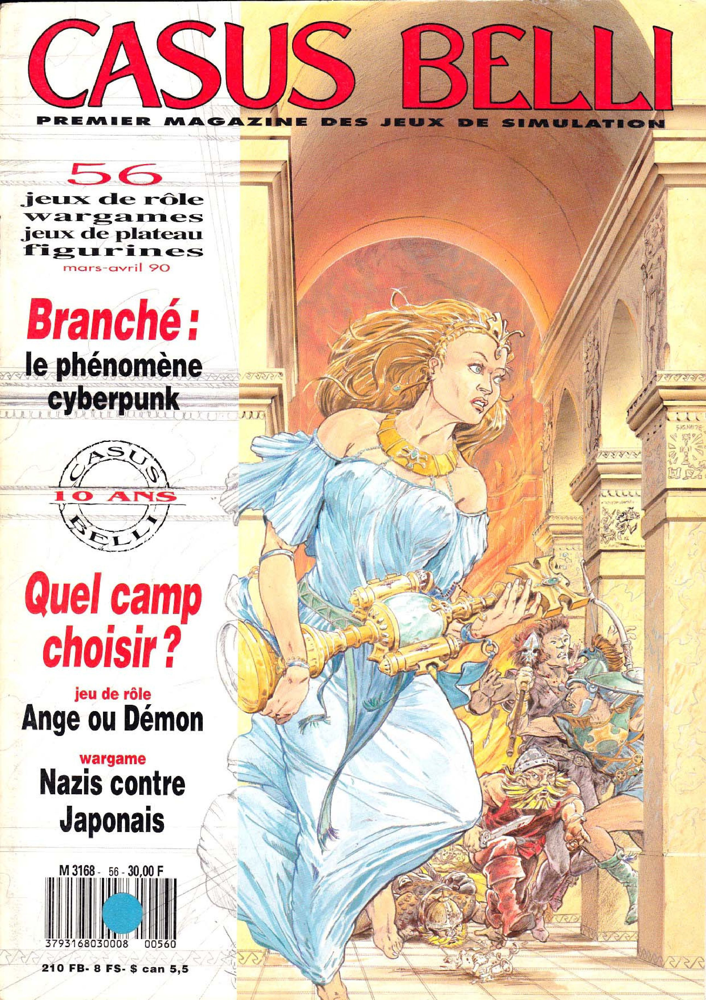
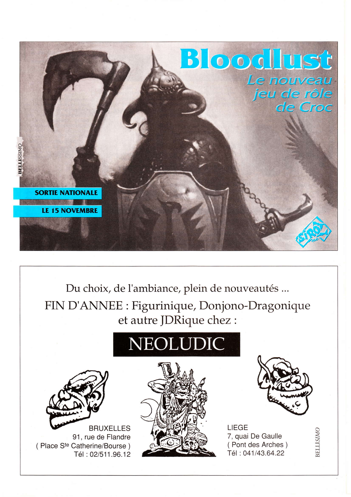

On continue notre exploration du début des années 1990 avec la période de mars-avril, contemporaine à la sortie du Casus Belli 56.
Un peu de mise en contexte pour commencer sur les actualités de la période. La désagrégation des régimes communistes en Europe continue à dominer les actualités. Les Pays de l’Est accélèrent leur transition : les soldats soviétiques partent de Hongrie et les premières élections avec du multipartisme ont lieu. Lothar de Maizière est élu en RDA et les discussions pour une Réunification qu’on croyait encore lointaine et soumise à de multiples conditions sont menées à marche forcée par la RFA : reconnaissance de la ligne Oder-Neisse pour rassurer le voisin polonais, fixation d’une date agressive (dès le 1er juillet) pour fondre le mark est-allemand dans le tout puissant mark ouest-allemand. Cela bouge également dans les autres coins d’Europe : la Slovénie amorce un processus de sécession de la Yousgoslavie, tout comme la Lituanie proclame son indépendance dans ce qui est encore l’Union Soviétique, et sans la validation de cette dernière. L’URSS commence donc à vaciller entre la préservation de son héritage impérial (le régime évolue vers un exécutif présidentiel fort pour maintenir et renforcer Gorbatchev), et la détente : reconnaissance du massacre de Katyn, discussion avec les USA pour réduire les stocks d’armement…
Plus à l’Ouest, on observe ou on se débat dans des troubles internes. C’est la grande période des manifestations en Grande-Bretagne avec un regain de violence contre la Poll Tax imposée par Thatcher, qui porte ici une des dernières réformes brutales de son exercice du pouvoir, avant de chuter prochainement. En France, ce qui marque le bimestre est le déchirement du PS pourtant au pouvoir, lors du congrès de Rennes ; et les émeutes à Chanteloup-les-Vignes, qui ne sont pas les premières (Vaulx-en-Velun a précédé) mais installe le paysage des banlieues et leur déliquescence dans ces nouvelles années 1990 (Chanteloup sera d’ailleurs le décor du film La Haine quelques années plus tard). Un petit détour par l’actualité d’alors :
https://www.ina.fr/ina-eclaire-actu/vid … les-vignes
Ailleurs, dans le monde, eh bien relativement peu d’événements majeurs ce qui fait que cette recension va être très courte. Dans ce qui restera dans les mémoires, on notera l’envoi d’Hubble dans l’espace, quelques soubresauts en Irak mais qui ne laissent pas deviner la suite, sinon son hostilité à Israël et aux Etats-Unis. Et en Algérie une société qui sombre progressivement, avec à nouveau des manifestations fleuve pour réclamer l’instauration de la charia.
Plus symboliquement on pourra noter une réunion aux Etats-Unis du Président Bush avec 17 pays représentés sur le climat, notamment le réchauffement, même si à cette époque c’est davantage le trou dans la couche d’ozone qui préoccupe et mobilise le monde. Enfin, tout aussi symbolique parce que je pense que ça vous parlera moins que Jérôme Kerviel, c’est aussi le procès et la condamnation du trader Michael Milken qui siffle la fin de la récré et inaugure les années 1990, en fermant définitivement les années fric de la décennie 1980.
On passe donc tout de suite au travail pour décortiquer ce Casus 56, avec un édito tonitruant pour nous annoncer la sortie de l’album Kroc le Bô – boucle temporelle amusante puisque le voilà ré-édité maintenant 35 ans plus tard. Cet édito sert surtout la modestie du magazine qui, sous une couverture de Didier « multi-classé » Guiserix, son co-fondateur, fête assez sobrement ses 10 ans. La célébration se limitera en effet à un encart très sage, peu ego-trip (contrairement au Hors Serie 0 du Casus de BBE  ).
).

Avant qu’on n’attaque les actualités des parutions, quelques actualités plus généralistes, avec le debriefing du Salon National du Jeu de Simulation à l’Aquaboulevard, dont cette première édition aura semble-t-il été trop sage en termes de publicité et de fréquentation pour que cette manifestation puisse se pérenniser. Et ce malgré des invités d’honneur conviés à grands frais comme Greg Stafford et Steve Jackson - la version US - ce qui permet de recueillir une interview instructive de ce dernier.
L’autre actualité est le devenir de Chroniques d’Outre Monde dont l’équipe rédactionnelle – dont faisait partie Christian Lehmann – a été débarquée manu militari, et le magazine peine à se relancer sous l’égide d’un propriétaire manifestement plus occupé à gérer des services de minitel rose qu’un magazine de JDR. Bien que le Barbare Déchaîné promette de continuer à enquêter, notamment auprès des anciens collaborateurs, l’affaire se poursuivra manifestement en coulisses.
Sur les sorties de ce bimestre, après les agapes de Noël, les estomacs ludiques se reposent, ou presque. Peu d’annonces avant les événements rôlistes phare comme le Salon des Jeux en avril pour la France ou la GenCon en août pour les Etats-Unis. De notre côté de l’Atlantique, on nous annonce L’Empire du Jeu et des Sens pour Alter Ego, mais qui manifestement ne paraîtra jamais, l’éditeur étant quasiment mort-né après la parution de son JDR. Flamberge continue en revanche son chemin avec Objectif Terre (Les Divisions de l’Ombre), et Les Silmarils également avec l’écran pour la Terre Creuse, mais aussi Binary RPG qui n’est pas un jeu de la galaxie Alternative même s’il tient sur une page et est vendu 2 F.
Chez les plus gros éditeurs, on trouvera Isengard (JRTM) chez Hexagonal, du matériel chez Jeux Descartes (l’écran 2ème édition pour Paranoïa, Octopussy et Pour votre information pour JB 007, du Cthulhu sur lequel je reviendrai un peu plus loin), et une activité aussi soutenue chez Siroz avec les nouvelles locomotives Car Wars et INS / MV. Changement de décennie donc pour cet éditeur originellement punk, puisque les annonces des suppléments pour ses anciennes gammes (Nexus Clouté pour Whog Shrog et Ares Protectiva pour Athanor) ne paraîtront en revanche jamais. On sent donc bien le retournement de marché se profiler avec une réalité économique qui rattrape le JDR.
D’ailleurs, chez les très gros éditeurs, il est désormais officiel que Gallimard arrête le JDR quand en revanche Milton Bradley se lance dedans, mais via le jeu de plateau Heroquest (tandis qu’André Foussat critique perfidement la version Advanced en VO en tête d’affiche pour démontrer que même la version plus élaborée reste encore limitée).
Et à propos de jeu de plateau, on peut noter une activité soutenue avec Krystal chez Oriflam qui reçoit une honnête critique de Tristan ; et Horreur à Arkham chez Descartes, qui est donc un dérivé de l’Appel de Cthulhu de Chaosium, avant que cela ne devienne une gamme à part entière chez Edge, et finalement un nouveau JDR en cette année 2025. En parallèle, l’éditeur français prépare la VF de la 4ème édition (déjà !) du jeu.

Enfin, chez les pas encore éditeurs, on annonce Mimetis chez les Edition des Sept Pierres et les activités de Cubic 6 qui propose déjà des prestations de MJ Pro.
De l’autre côté de l’Atlantique, Runequest redémarre avec Troll Gods et Elder Secrets chez Avalon Hill, tandis que Chaosium annonce la prochaine édition de Stormbringer (ci-dessous) et de Pendragon. Enfin les Terres de Lovecraft sont inaugurées avec la première version de Arkham Unveiled. Même rythme soutenu chez FASA pour Shadowrun (Mercurial, Dreamchipper) et GDW avec beaucoup de matériel pour Megatraveller.
Idem pour ICE et MERP, mais aussi Rolemaster avec notamment la continuation de ses suppléments historico-génériques à la GURPS (Pirates), ou le développement de son jeu Cyber, Cyberspace, en tant que gamme dédiée aux côtés de Cyberpunk et Shadowrun : un scénario (Edge-on) et un sourcebook sur les corpos Sprawlgangs.
Le cyber bat son plein comme l’article dédié de Casus dans ce numéro va le traiter et chaque éditeur essaye de démarquer son produit. Ainsi pour le Cyberpunk de Talsorian avec le supplément Rockerboy alors que cette classe de perso sortira des archétypes de Shadowrun dès la seconde édition. Et Steve Jackson Games annonce son GURPS Cyberpunk qui verra la fameuse descente du FBI dans les locaux de l’éditeur à cette même période !
Tout aussi Cyberpunk, mais pour de vrai, TSR précise sa nouvelle organisation pour la France depuis la perte de la licence de Transecom : les produits seront directement pilotés depuis TSR UK, TSR ne gardant qu’une vitrine pour la France, mais promettant le retour de la VF du Manuel des Joueurs d’AD&D2 pour juin. Et ouvre aussi une succursale à Los Angeles, pour la partie cinéma / BD / TV, information qui m’a surpris puisque cela avait déjà été mis en place par Gygax (ce qui lui avait valu de se faire doucement évincer de TSR) ? Un autre essai qui finira en impasse comme le précédent ?
Pas mal sinon de matériel pour ce début d’année qui confirme l’élargissement des gammes par l’éditeur : du Greyhawk (Puppets), du Lankhmar (Thieves of Lankhmar), du Dragonlance (Dragon Dawn pour lancer une nouvelle campagne sur Taladas, et aussi un Monstrous Compendium dédié), du Forgotten Realms (un Monstrous Compendium dédié également, Old Empires), du Spelljammer (Wildspace). Sans compter du matériel générique pour la 2E : Complete Thief Handbook, Catacomb Guide.
Enfin West End Games, aussi avec Star Wars, est passé en hyperespace : déjà 5 Galaxy Guide parus, et une profusion de modules. Et l’annonce du prochain jeu à gros budget à paraître en 1990 chez cet éditeur : The Other Roleplaying Game, le fameux TORG.
Comme on est plus ci-dessous dans les annonces de produits à paraître, les critiques sont surtout consacrées à des jeux de plateau déjà évoqués, des wargames (Hanau 1813, Europe Aflame, Napoleon at Leipzie), des presque wargames (Car Wars, Battle for Endor) ; et la partie JDR est à nouveau très limitée : Time of the Dragon pour Dragonlance pour découvrir une autre face de Krynn, des suppléments pour Space 1889 (Steppelords of Mars, Cloud Captains of Mars, Canal Priests of Mars) qui font surtout office de chant du cygne, Enfer & Damnation sur un thème finalement très proche de INS / MV, et paru quasiment en même temps comme supplément à Jeux et Stratégie.
Les deux Epreuves du Feu sont consacrées au tout nouveau INS / MV avec un scénario et une aide de jeu, et à la Terre Creuse avec un scénario / mise en contexte. Ce dernier est nul de nul et ne donne pas envie de découvrir un jeu qui ne donnait déjà pas envie d’être découvert. Le scénario INS / MV, première parution du genre hors boîte de base, est lui-même plus une mise en contexte / piège à cons qu’un scénario très élaboré. Mais, contrairement à son homologue Terre Creuse, il contient tout le sel de ce qui fera le succès de ce jeu dans l’Hexagone : la petite nouvelle d’entrée sympatoche avec le ton INS / MV, les PNJ et le décor (le village de Crampignac) franchouillard à souhait. Et l’aide de jeu, comme la critique de Pierre Rosenthal, surfe sur les actualités politiques de moment de façon grinçante (dans la lignée des Guignols de l’Info qui ont démarré depuis peu à la TV) avec l’exemple d’un conseiller régional FN comme Démon par Pierre, ou l’aide de jeu qui débute avec une autre nouvelle d’entrée featuring Daniel et des skins.
Les autres scénarios sont les suivants pour l’encart de ce bimestre :
La foire aux six mortels pour Paranoïa de Tristan. Que dire si ce n’est que c’est un scénario pour Paranoïa, dont l’intérêt pour moi est surtout les jeux de mots des différents PNJ. Pour le reste, ça part dans tous les sens avec une intrigue principale qui sert davantage pour le decorum que pour l’intrigue, des intrigues secondaires à développer et des rencontres aléatoires pour rajouter au chaos ambiant, comme le jeu le favorise trop. Donc bof.
Rien à voir avec La Gestalt Drug pour Berlin XVIII de toujours Tristan, un scénar que je trouve icônique pour découvrir ce jeu et ses ressorts, et évoluer dans le secteur XVIII sur fond de trafic de drogue et de magouilles. Plus inspiré et convaincant que le scénario Paranoïa, je recommande de le redécouvrir si vous êtes en recherche de matériel BXVIII ou pour une excursion rapide sur ce jeu @Dox !
Winterblue pour Cyberpunk, premier scénario si je ne me trompe dans les pages de Casus de Patrick Bousquet et Christophe Debien (les futurs fameux Pat & Chris). Ce scénario est publié par Casus avec des réserves car s’il résonne vraiment Cyberpunk, il n’est cependant pas canon pour le jeu de Talsorian. Très agréable à lire grâce à sa qualité d’écriture qui le novellise en partie, il est en revanche dirigiste comme une nouvelle, et présente un intérêt plus que limité une fois le plaisir de la lecture passée.
On pourrait en dire presqu’autant pour Des larmes de sang pour Hurlements par Jean-Luc Bizien puisqu’il s’ouvre sur une planche BD de Ben pour finalement offrir un scénario lui-même effroyablement dirigiste et réservé à un seul joueur, pour une expérience « particulière » pour ne pas dire malsaine pour le mettre à l’épreuve. Scénario (inutilement) dérangeant de mon point de vue, y-a-t-il au moins un intérêt de garder sa galerie de PNJ tarés ?
Gros article ensuite sur le genre cyberpunk de 4 pages par Patrick Leclerq et Pierre Lejoyeux qui fait une revue approfondie des canons du genre, maintenant qu’il est devenu un nouveau genre à part entière dans les gammes de JDR. Même si ça a une saveur un peu Le Cyberpunk pour les Nuls, c’est dense et documenté comme d’habitude avec Casus. L’article qui suit est de Brigitte Brunella, soit le fameux Jean Balczesak, et est dédié au combat médiéval. Même constat que l’aide de jeu précédente même si ça n’a aucun lien : c’est dense et instructif.
On arrive ensuite sur la partie hors JDR du magazine. D’abord avec les jeux de plateau avec une revue sur 2 pages de la VF de Civilisation, sous la couverture super évocatrice de Descartes qui m’avait fait craquer à l’époque sur ce Monster Game, aux parties qui ne duraient pas moins de 8h (et avec jusqu’à 7 joueurs possibles). Dommage que cette très belle VF n’était graphiquement pas compatible avec celle d’Avalon Hill qui a publié ensuite des extensions en VO qu’on ne pouvait pas mélanger avec la VF (et qui n’auront jamais été traduites, malgré l’espoir raisonnable exprimé dans l’article de Casus).
Succède la partie Wargame, avec un jeu qui change drastiquement des conflits de la 2ème GM ou des simulations de guerre moderne qui peuplent en général la rubrique. Le wargame du mois, Tomorrow The World, ne propose rien de moins qu’un conflit mondial opposant le IIIe Reich à l’Empire Japonais en 1948, après que ceux-ci aient écrasé les alliés précédemment sur fond de what if à l’échelle planétaire. Exercice épineux car le jeu en question favorise manifestement davantage la partie uchronique (dont Casus rappelle la filiation avec le Maître du Haut Château de Philip K. Dick) que la partie simulation. On n’est manifestement pas devant un World In Flames qui aurait fait date sur le thème traité.
Autre jeu qui change des thèmes traditionnels dans Casus : Imperium Romanum II de West End Games, qui permet de reconstituer l’épopée romaine, et à la documentation historique impeccable. Enfin, Fifth Fleet nous ramène dans le contemporain pour cette série de Victory Games, mais avec une présence encore incongrue de la marine soviétique, sur un théâtre d’opération – Océan Indien et Golfe Persique – qui va rapidement rattraper la nouvelle actualité et géopolitique de ce début 1990… Le reste du matériel proposé est des conseils de jeu pour 1941, le wargame paru précédemment dans CB et l’ajout d’options fantastiques pour la règle Première Ligne, elle aussi publiée précédemment pour jouer dans des décors à la Tolkien, et reboucler avec un Chainmail pour ce numéro très symbolique de Casus.
On termine avec la Ludotique et les Inspis. Côté logiciels, la période est faste avec rien de moins, en inspiration directe, que Curse of the Azure Bonds, 2ème épisode dans les Royaumes Oubliés après Pool of Radiance, et Hound of Shadow, jeu manifestement mineur mais officiellement basé sur L’Appel de Cthulhu (même si on aura gardé plus en mémoire les moins officiels Alone in the Dark en inspi AdC). Enfin, parution aussi du jeu Mechwarrior en provenance de Battletech. Je passe vite sur les Inspis romans et BD dont les titres évoqués ne m’ont pas évoqué de curiosité particulière, pour surtout m’arrêter sur le plus gros cadeau pour ce 10ème anniversaire, récupéré par Tristan, avec l’inauguration de la Rubrique Universalis qui va lui permettre non seulement d’avoir sa rubrique régulière phare, et surtout de passer en Notes de Frais chez Excelsior ses nombreuses lectures ! Félicitations @Tristan  ! Ce premier numéro de cette nouvelle rubrique lui permettra de mettre en lumière des livres aussi éclectiques que les reportages d’Albert Londres, les romans Warhammer, et un livre un peu confidentiel destiné à faire prochainement carrière dans le JDR, Le Pendule de Foucault !
! Ce premier numéro de cette nouvelle rubrique lui permettra de mettre en lumière des livres aussi éclectiques que les reportages d’Albert Londres, les romans Warhammer, et un livre un peu confidentiel destiné à faire prochainement carrière dans le JDR, Le Pendule de Foucault !
Et rendez-vous dans 2 mois pour le numéro 57 !